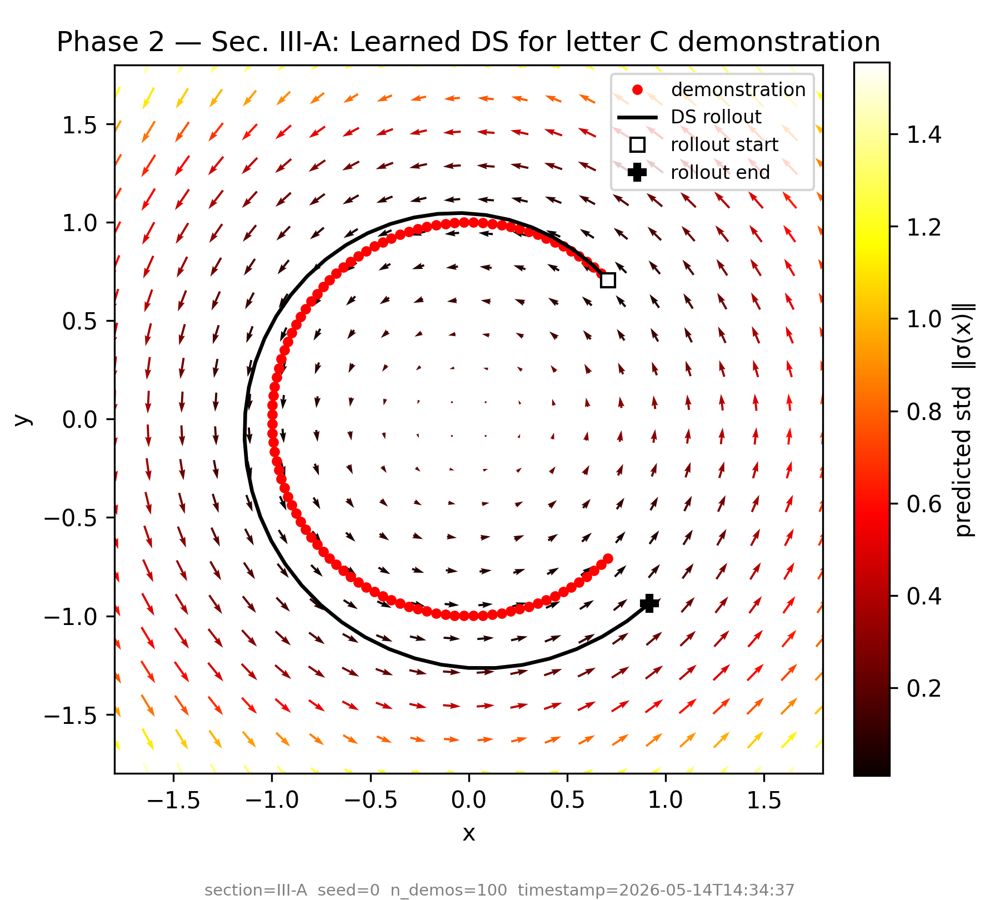
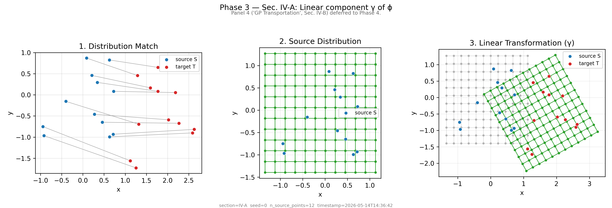
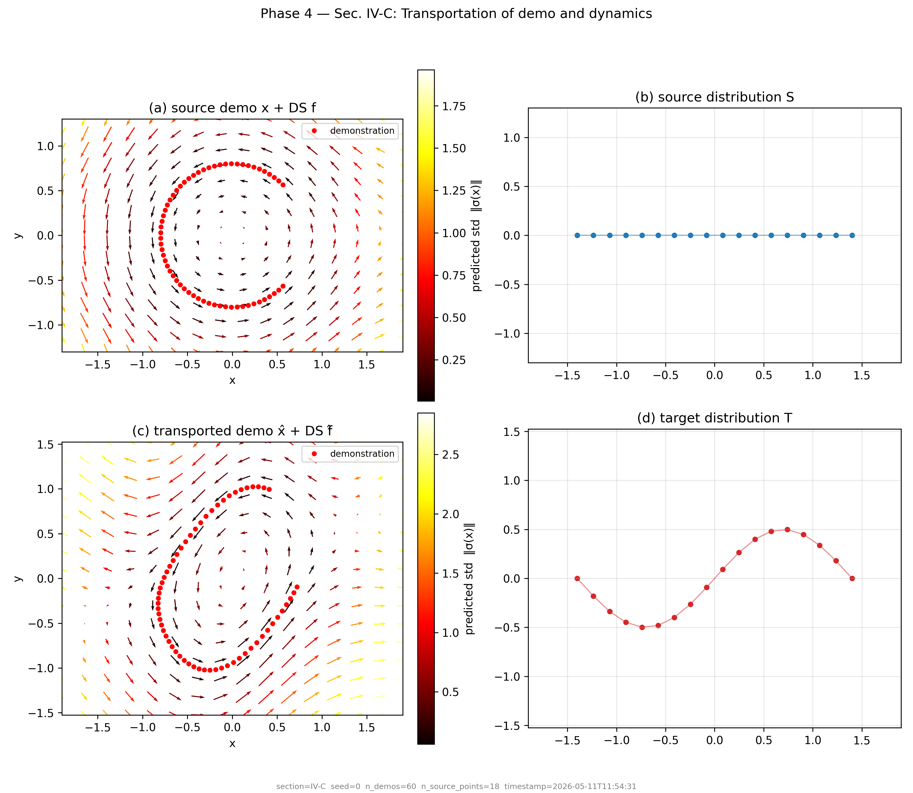
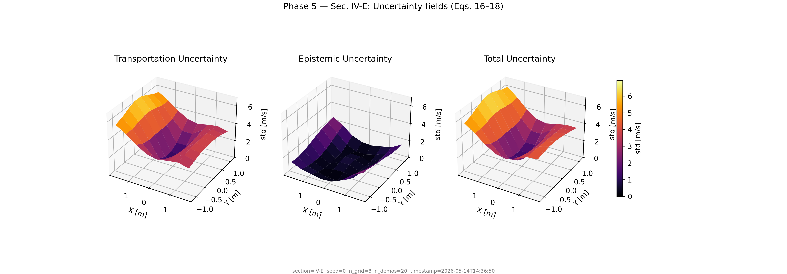
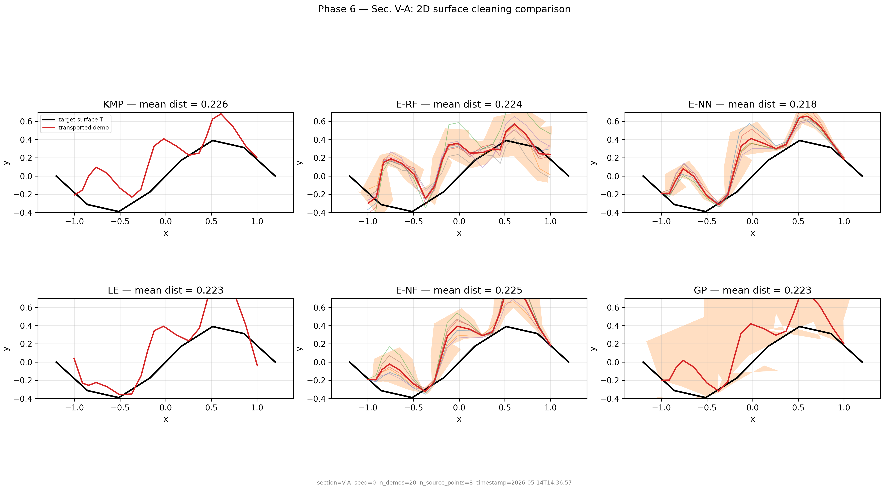
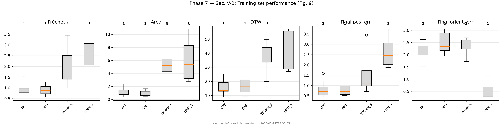
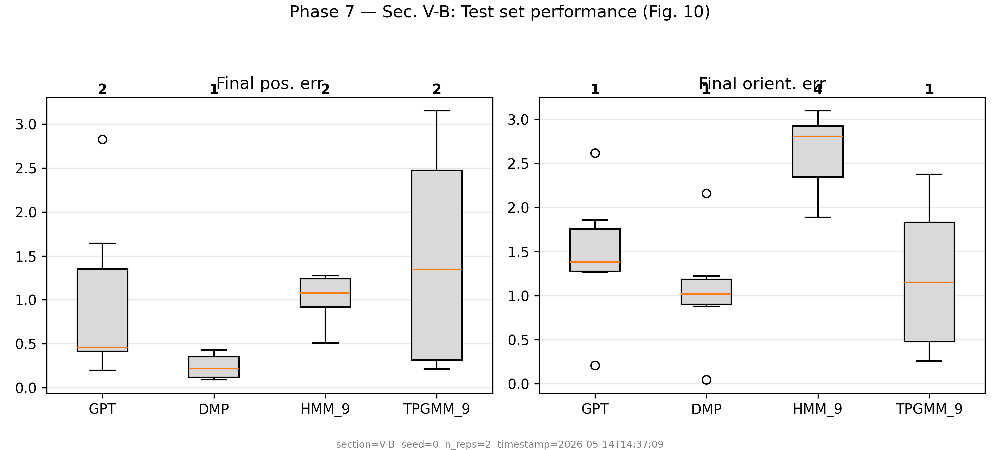

Show it once. It generalizes everywhere.
TP-GPT learns a robot policy from a single demonstration. Drag objects, draw paths, or pose the arm — watch it adapt in real time.
Generalization in action
One demonstration. Three tasks. Zero retraining.
Reshelving

TP-GPT transports pick-place policy to new object/goal positions
Cleaning

TP-GPT adapts cleaning path to shifted surface
Arm-pose

TP-GPT traces path through new arm configuration

Three tasks · Single demonstration each · Franka Panda arm · MuJoCo kinematic simulation
Interactive demo
Try it yourself
Configure the scene
Drag objects to new positions,
then click Generalize.
Loading controls…
The TP-GPT Algorithm
Four steps from a single demonstration to a generalized policy. Based on Franzese et al. 2024.
Learn from demonstration
A Gaussian Process fits the velocity field ẋ = f(x) from a single kinesthetic demonstration. The GP's zero-mean prior ensures zero velocity in regions with no evidence — the robot stays still unless it has seen training data nearby.

Learned velocity field · letter-C demoTrack keypoints
Source keypoints S (e.g. box corners, shelf slot corners) and target keypoints T define how the scene has changed. Just a handful of paired points — no full scene reconstruction needed.

Source → target distributions (Fig. 3, panels 1–3)Transport the policy
The map ϕ(x) = γ(x) + ψ(γ(x)) transforms every point from source to target scene. γ is a linear SVD-based alignment; ψ is a GP correcting the nonlinear residual. Velocities, orientations, and stiffness are transported via the Jacobian J = ∂ϕ/∂x.

Transportation scheme (Fig. 5)Execute with uncertainty
Total uncertainty Σ = Σ_transport + Σ_epistemic quantifies confidence everywhere in the workspace. High uncertainty near unexplored regions; low near training data. This guides the robot to slow down or seek corrections in uncertain areas.

Uncertainty triptych (Fig. 6): transport / epistemic / totalBaseline comparison — 2D surface cleaning
TP-GPT is the only method with well-calibrated epistemic uncertainty that grows correctly outside the training distribution. Ensemble methods (E-RF, E-NN, E-NF) plateau out-of-distribution; KMP and LE have no uncertainty.

Fig. 7 · Six methods · 2D surface cleaning taskBenchmark Performance
TP-GPT reproduced across Secs. V-A, V-B, V-C. Mann-Whitney U-test ranking confirms TP-GPT achieves rank 1 on Fréchet distance, area between curves, and DTW. Baselines on 20-repetition runs.
Table I · Method comparison
Methods compared on 2D surface cleaning (Sec. V-A). TP-GPT is the only method with analytical, well-calibrated uncertainty.
| Method | Modality | Velocity gen. | Uncertainty | Type |
|---|---|---|---|---|
| TP-GPT (ours) | GP | ✅ | ✅ | Analytical |
| KMP | Kernel | ❌ | ❌ | None |
| Laplacian Editing | Graph | ❌ | ❌ | None |
| Ensemble RF | Random Forest | ✅ | ✅ | Estimated |
| Ensemble NN | Neural Net | ✅ | ✅ | Estimated |
| Ensemble NF | Norm. Flows | ✅ | ✅ | Estimated |
Training set performance (Fig. 9)

5 metrics · 8 method variants · 20 repetitionsTest set generalization (Fig. 10)

Final position + orientation error · Unseen frame configurationsBuilt on open research
Generalization of Task Parameterized Dynamical Systems using Gaussian Process Transportation
Read on arXiv →@article{franzese2024tpgpt,
title = {Generalization of Task Parameterized Dynamical Systems
using Gaussian Process Transportation},
author = {Franzese, Giovanni and Prakash, Ravi and Kober, Jens},
journal = {arXiv preprint arXiv:2404.13458},
year = {2024}
}